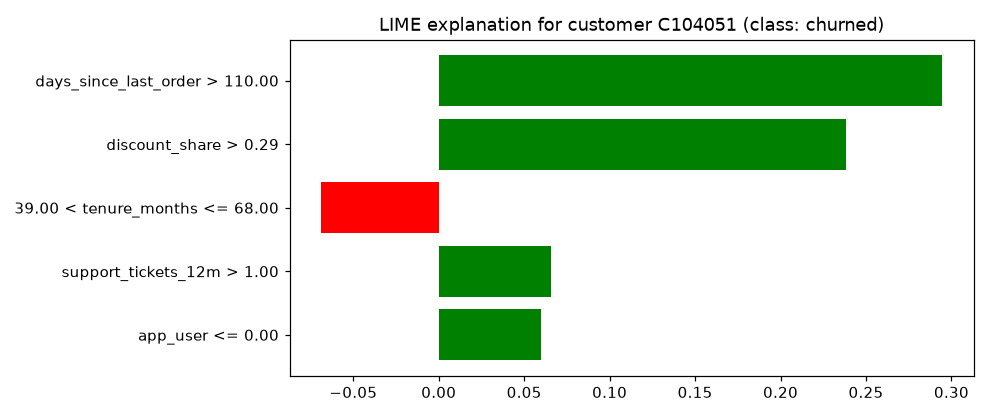

🍋 Lesson 7.3: LIME and Fairness Checks
Explain a single prediction by fitting a small, simple model around it, learn how far to trust that explanation, and then ask a different question: does the churn model treat different groups of customers alike?
🎯 Learning Objectives
By the end of this lesson, you will be able to:
- Describe LIME's recipe (perturb, predict, weight by closeness, fit a simple model) and build a basic version by hand
- Explain a prediction with
lime.lime_tabular.LimeTabularExplainerand judge it by its fidelity score and its stability across random seeds - Say when LIME and SHAP answer different questions, and run simple what-if checks on one customer
- Run a fairness check: compare flag rate, recall and precision across age groups and test whether a gap is larger than chance
In This Lesson
🧭 A Simple Model Near One Customer
SHAP splits a prediction into fair shares. LIME (Local Interpretable Model-agnostic Explanations, from a 2016 paper by Ribeiro, Singh and Guestrin) takes a different route. It accepts that the churn model is complicated everywhere, but bets that it is simple near any one customer, simple enough that a straight-line model can imitate it there. The straight-line model is the explanation.
💡 Mental Model: The Earth Looks Flat From Your Street
The Earth is round, but a map of your neighborhood can be flat and still be accurate, because you only use it nearby. LIME draws a flat map of the model around one customer. It is useful for questions about that neighborhood ("what pushes this customer's risk around?") and misleading if you carry it across the country ("this is how the model works in general").
🤔 Why This Matters
LIME works on anything that returns probabilities: a pipeline, a neural network, a model behind an API you cannot see into. It is also the clearest example of a general idea, explaining a complex model with a simple surrogate, and of that idea's main risk: the surrogate may not imitate the model well. Learning to check that (fidelity and stability) is the lesson's first half. The second half asks a question no explanation method answers on its own: is the model fair?
✋ LIME by Hand
Start from Lesson 7.2's setup: the same gradient-boosting model and the same riskiest customer, C104051 (364 days without an order, 43% of spend discounted, three tickets, no app). Split the whole table so the IDs and the age groups stay with each row; you will need the age groups later.
import numpy as np
import pandas as pd
from sklearn.model_selection import train_test_split
from sklearn.ensemble import HistGradientBoostingClassifier
customers = pd.read_csv("data/customers_churn.csv")
features = ["tenure_months", "orders_12m", "spend_12m", "avg_order_value", "days_since_last_order",
"returns_12m", "return_rate", "support_tickets_12m", "discount_share", "app_user",
"email_opens_90d"]
train, test = train_test_split(customers, test_size=0.25, stratify=customers["churned"], random_state=42)
X_train, X_test = train[features].astype(float), test[features].astype(float)
model = HistGradientBoostingClassifier(random_state=42).fit(X_train, train["churned"])
proba = model.predict_proba(X_test)[:, 1]
i = int(proba.argmax())
x0 = X_test.iloc[i]
print(test["customer_id"].iloc[i], f"churn probability {proba[i]:.3f}")Output
C104051 churn probability 0.972Now follow the recipe. Make 3,000 variants of this customer by nudging every feature by random amounts on the scale of its training standard deviation, keep them within the range seen in training, and score them with the model. Then weight each variant by how close it is (a bell-shaped kernel on the standardized distance) and fit a weighted ridge regression.
from sklearn.linear_model import Ridge
rng = np.random.default_rng(42)
sd = X_train.std()
# 1. variants near the customer, kept inside the training range
noise = rng.normal(size=(3000, len(features)))
variants = pd.DataFrame(x0.to_numpy() + noise * sd.to_numpy(), columns=features)
variants = variants.clip(lower=X_train.min(), upper=X_train.max(), axis=1)
variants["app_user"] = (variants["app_user"] > 0.5).astype(float)
# 2. ask the model
scores = model.predict_proba(variants)[:, 1]
# 3. weight by closeness (distance in standard deviations)
steps = (variants - x0) / sd
distance = np.sqrt((steps ** 2).sum(axis=1))
width = 0.75 * np.sqrt(len(features)) # LIME's default kernel width
weights = np.exp(-distance ** 2 / width ** 2)
# 4. fit a simple weighted model: its slopes are the explanation
surrogate = Ridge(alpha=1.0).fit(steps, scores, sample_weight=weights)
local = pd.Series(surrogate.coef_, index=features).sort_values(key=abs, ascending=False)
print(local.round(3).head(5))
print(f"fidelity (weighted R2): {surrogate.score(steps, scores, sample_weight=weights):.3f}")
print(f"surrogate at the customer: {surrogate.intercept_:.3f} model: {proba[i]:.3f}")Output
discount_share 0.086
tenure_months 0.080
app_user -0.059
days_since_last_order 0.050
orders_12m -0.016
dtype: float64
fidelity (weighted R2): 0.496
surrogate at the customer: 0.897 model: 0.972Each weight is a local slope: the change in predicted probability for one standard deviation more of that feature, near this customer. The fidelity score (the surrogate's weighted R²) says how well the flat map fits the neighborhood; about 0.5 means "roughly", which is typical for a model with thresholds.
Now the surprise. days_since_last_order is not the top slope, even though SHAP gave it the biggest share. Both are right, because they answer different questions. SHAP asks "how much does this feature explain the gap between this customer and an average one?" (a lot: 364 days is extreme). The local slope asks "if this feature moved a little from here, how much would the risk change?" (not much: at 364 days the risk curve from Lesson 7.1 is already flat, and the variants cannot go past the training maximum). Discount reliance and tenure, by contrast, sit near steep parts of their curves.
⚠️ "Local" Depends on Choices You Made
The neighborhood size (the noise scale and the kernel width), the number of variants and how you treat a 0/1 column like app_user all change the answer. That is not a flaw of this hand-made version; the library has the same knobs with default settings. Always ask what neighborhood an explanation describes.
📦 The lime Library
The lime package wraps the recipe. LimeTabularExplainer learns each feature's distribution from the training data. explain_instance needs the customer as a NumPy array and a function that takes a NumPy array and returns class probabilities. Two details: LIME cannot handle missing values in the training data, so fill them first (with training medians), and LIME passes plain arrays, so the function rebuilds a DataFrame with the feature names the model was trained on.
from lime.lime_tabular import LimeTabularExplainer
fill = X_train.median()
def predict_fn(rows):
return model.predict_proba(pd.DataFrame(rows, columns=features))
lime_explainer = LimeTabularExplainer(
X_train.fillna(fill).to_numpy(), feature_names=features,
class_names=["stayed", "churned"], mode="classification", random_state=42,
)
exp = lime_explainer.explain_instance(x0.fillna(fill).to_numpy(), predict_fn, num_features=5, num_samples=5000)
for rule, weight in exp.as_list():
print(f"{rule:35s} {weight:+.3f}")
print(f"fidelity {exp.score:.3f} surrogate prediction {exp.local_pred[0]:.3f} model {proba[i]:.3f}")Output
days_since_last_order > 110.00 +0.295
discount_share > 0.29 +0.238
39.00 < tenure_months <= 68.00 -0.069
support_tickets_12m > 1.00 +0.066
app_user <= 0.00 +0.060
fidelity 0.512 surrogate prediction 0.580 model 0.972By default LIME discretizes numeric features into quartile bins from the training data, so each feature becomes a yes/no rule like "days_since_last_order > 110". The weight says how much being in this customer's bin, rather than another bin, moves the predicted probability. That turns the question back towards "what about this customer is unusual and risky?", which is why the ranking now resembles SHAP's: the long silence and heavy discounts lead, and a mid-range tenure pulls slightly down.
Look at the last line too. The surrogate predicts about 0.58 for a customer the model scores at 0.97. LIME's simple model captures the direction of the main pushes, not the exact prediction, and the fidelity of about 0.5 says the same. SHAP values, by contrast, add up to the model's output exactly. LIME also draws its explanation as a chart:
import matplotlib.pyplot as plt
fig = exp.as_pyplot_figure()
fig.set_size_inches(9, 3.8)
plt.title("LIME explanation for customer C104051 (class: churned)")
plt.tight_layout()
plt.show()
🎲 How Stable Is an Explanation?
LIME is random: it draws variants. Rerun it with another seed and the explanation can change. That matters, because an agent reading "reason 3" on two days should not see two different reasons. Check it: explain the same customer with three seeds, first with 300 variants, then with 5,000.
for n_samples in [300, 5000]:
print(f"num_samples={n_samples}")
for seed in [1, 2, 3]:
explainer_s = LimeTabularExplainer(X_train.fillna(fill).to_numpy(), feature_names=features,
class_names=["stayed", "churned"], random_state=seed)
e = explainer_s.explain_instance(x0.fillna(fill).to_numpy(), predict_fn, num_features=3,
num_samples=n_samples)
print(f" seed {seed}:", " | ".join(f"{rule} {w:+.2f}" for rule, w in e.as_list()))Output
num_samples=300
seed 1: days_since_last_order > 110.00 +0.29 | discount_share > 0.29 +0.27 | 39.00 < tenure_months <= 68.00 -0.07
seed 2: days_since_last_order > 110.00 +0.29 | discount_share > 0.29 +0.21 | support_tickets_12m > 1.00 +0.08
seed 3: days_since_last_order > 110.00 +0.29 | discount_share > 0.29 +0.25 | support_tickets_12m > 1.00 +0.07
num_samples=5000
seed 1: days_since_last_order > 110.00 +0.30 | discount_share > 0.29 +0.24 | 39.00 < tenure_months <= 68.00 -0.08
seed 2: days_since_last_order > 110.00 +0.30 | discount_share > 0.29 +0.24 | 39.00 < tenure_months <= 68.00 -0.07
seed 3: days_since_last_order > 110.00 +0.30 | discount_share > 0.29 +0.26 | 39.00 < tenure_months <= 68.00 -0.07The top two rules hold in every run. With only 300 variants, the third reason and the weights wander from seed to seed; with 5,000 they settle. The lessons: use enough samples (the library's default is 5,000), fix random_state so your report is reproducible, and treat small weights, the ones that change between seeds, as noise.
✅ Two Checks Before You Trust a LIME Explanation
Fidelity: is exp.score reasonable, and is exp.local_pred at least on the same side of your decision threshold as the model? Stability: do the top reasons survive a change of seed? If either check fails, report fewer reasons or switch to SHAP.
🔮 What-If Checks and Choosing a Method
The simplest local explanation of all is to change one thing and ask the model again. If C104051 had ordered more recently, what would the model say?
what_if = X_test.iloc[[i]].copy()
for days in [364, 200, 150, 120, 60]:
what_if["days_since_last_order"] = days
print(f"{days:3d} days -> predicted churn {model.predict_proba(what_if)[0, 1]:.3f}")Output
364 days -> predicted churn 0.972
200 days -> predicted churn 0.899
150 days -> predicted churn 0.716
120 days -> predicted churn 0.619
60 days -> predicted churn 0.645Even with a recent order, this customer stays above 0.6: the discounts and tickets are still there. This is exactly the kind of insight a single "top reason" hides. It also shows the danger of reading explanations as instructions: "make them order" would not, according to the model, make this customer safe. And remember that what-ifs describe the model's answer, not what the customer would really do.
| Question | Good tool | Watch out for |
|---|---|---|
| What does the model rely on overall? | Permutation importance (7.1), mean |SHAP| | Correlated features sharing credit |
| How does risk change along one feature? | Partial dependence and ICE (7.1), SHAP scatter | Impossible feature combinations |
| Why this prediction, with parts that add up? | SHAP (7.2) | Units (log-odds), choice of background |
| What moves this prediction nearby, for any model? | LIME | Fidelity, stability, neighborhood choices |
| What would the model say if X were different? | What-if checks | Unrealistic changes; model, not reality |
⚖️ A Fairness Check
Explanations tell you how a model decides. A fairness check asks whether its decisions land differently on different groups of people. Pinecrest's retention campaign offers a discount to customers the model flags, and the team can afford calls to 20% of customers. Being flagged is a benefit here: a flagged churner gets an offer, a churner who is missed does not. So a natural question is: does the model find churners equally well in every age group?
The model never sees age_group. That does not settle the question, because other features can act as proxies for a group (spending patterns, app use, tenure). Not using a sensitive attribute is sometimes called "fairness through unawareness", and it guarantees nothing. You have to measure. Age is used here only to audit the model; it is never an input and never a target.
🔑 Key Terms
Flag rate (selection rate): the share of a group that the model flags. Equal flag rates is called demographic parity. Recall (true positive rate): of a group's real churners, the share that got flagged. Equal recall is called equal opportunity. Precision: of a group's flagged customers, the share who really churned. Different definitions can conflict; you choose the one that matches the harm you care about.
audit = test[["customer_id", "age_group", "churned"]].copy()
audit["age"] = audit["age_group"].fillna("unknown")
audit["p"] = proba
audit["flag"] = audit["p"] >= audit["p"].quantile(0.80) # calls for the top 20%
by_age = audit.groupby("age").agg(customers=("churned", "size"), churners=("churned", "sum"),
churn_rate=("churned", "mean"), flag_rate=("flag", "mean"))
by_age["recall"] = audit[audit["churned"] == 1].groupby("age")["flag"].mean()
by_age["precision"] = audit[audit["flag"]].groupby("age")["churned"].mean()
print(by_age.round(3))Output
customers churners churn_rate flag_rate recall precision
age
18-24 162 28 0.173 0.173 0.536 0.536
25-34 309 55 0.178 0.184 0.564 0.544
35-44 295 51 0.173 0.173 0.569 0.569
45-54 255 31 0.122 0.212 0.710 0.407
55-64 204 34 0.167 0.255 0.765 0.500
65+ 147 24 0.163 0.211 0.708 0.548
unknown 128 25 0.195 0.211 0.680 0.630At first glance this looks worrying. The model finds 77% of churners aged 55 to 64 but only 54% of churners aged 18 to 24, a gap of 23 percentage points. Younger churners would miss out on offers. Before raising the alarm, look at the churners column: the recall for 18 to 24 rests on 28 people. One customer more or less moves it by almost 4 points. Is a gap this size larger than what chance alone produces with groups this small?
A permutation test answers that, with the same shuffling idea as permutation importance. Shuffle the age labels among the churners, so age has nothing to do with being flagged, and recompute the largest recall gap. Do that 2,000 times. If gaps as big as the real one are common under shuffling, the real gap is not evidence of unfairness.
def recall_gap(frame):
recall = frame.groupby("age")["flag"].mean()
return recall.max() - recall.min()
churners = audit[audit["churned"] == 1]
observed = recall_gap(churners)
rng = np.random.default_rng(42)
shuffled_gaps = np.array([recall_gap(churners.assign(age=rng.permutation(churners["age"].to_numpy())))
for _ in range(2000)])
print(f"observed recall gap: {observed:.3f}")
print(f"typical gap by chance (median): {np.median(shuffled_gaps):.3f}")
print(f"share of shuffles with a gap at least as large: {(shuffled_gaps >= observed).mean():.3f}")Output
observed recall gap: 0.229
typical gap by chance (median): 0.223
share of shuffles with a gap at least as large: 0.473Shuffled labels produce a gap this large about half the time. With seven groups of 24 to 55 churners, a spread of over 20 points between the best and worst group is simply what noise looks like. The honest conclusion is: no evidence that recall differs by age group, and not enough data to rule out a moderate difference. That second half matters. "We found no problem" is not "we showed there is none".
⚠️ What a Fairness Check Can and Cannot Do
- It measures outcomes for the groups you chose, with the definition you chose. Other groups and definitions can tell a different story.
- Small groups give noisy numbers in both directions: they can fake a gap and hide a real one. Report group sizes and uncertainty, and repeat the audit as more data arrives.
- A gap is a question, not a verdict. The next step is to look at why (which features, which proxies) and whether the business decision itself, not only the model, is fair.
- Using sensitive attributes even for auditing needs care: collect them only with a clear purpose and permission, store them separately, and never feed them to the model as a shortcut.
⚠️ Common Mistakes
1. Missing Values in LIME's Training Data
broken = LimeTabularExplainer(X_train.to_numpy(), feature_names=features, random_state=42)
broken.explain_instance(x0.fillna(fill).to_numpy(), predict_fn)Error
ValueError: Domain error in arguments. The `scale` parameter must be positive for all distributions, and many distributions have restrictions on shape parameters. Please see the `scipy.stats.truncnorm` documentation for details.What it means: email_opens_90d has gaps, so LIME's summary statistics for it are NaN, and drawing random variants from a distribution with an undefined spread fails deep inside SciPy. The message does not mention missing values, which makes it hard to diagnose. Fix: fill missing values (training medians) in the data you give the explainer, and in the row you explain.
2. Giving LIME Labels Instead of Probabilities
lime_explainer.explain_instance(x0.fillna(fill).to_numpy(),
lambda rows: model.predict(pd.DataFrame(rows, columns=features)))Error
NotImplementedError: LIME does not currently support classifier models without probability scores. If this conflicts with your use case, please let us know: https://github.com/datascienceinc/lime/issues/16What it means: LIME fits a regression to the model's scores; 0/1 labels carry almost no information near one customer. Fix: pass a function that returns predict_proba output, one column per class.
3. Passing a pandas Row
lime_explainer.explain_instance(x0.fillna(fill), predict_fn)Error
KeyError: 0What it means: LIME indexes the row by position (row[0]), and a pandas Series with feature names as its index has no label 0. Fix: pass .to_numpy().
4. Reporting Weights From Too Few Samples
You saw it in the stability section: with 300 variants the third reason changed with the seed. Fix: keep num_samples at 5,000 or more for anything you report, fix random_state, and check the top reasons with a second seed.
5. "We Removed Age, So the Model Is Fair"
The churn model never saw age, yet its recall differs by age group (by chance, here, but you only know that because you measured). Fix: audit outcomes by group, even for features the model does not use.
🛠️ Project: Auditing the Retention Campaign
Before the campaign launches, Pinecrest's analytics lead asks for an audit: are the explanations agents will see reliable, and does the targeting treat age groups alike? You will explain three flagged customers with LIME, test the stability of each explanation, check flag rates by age with a permutation test, and save a short audit table. Work in a new notebook called lesson_7_3_project. Allow about 50 minutes.
🛠️ Step 1: Train and flag the top 20% (5 min)
import numpy as np
import pandas as pd
from sklearn.model_selection import train_test_split
from sklearn.ensemble import HistGradientBoostingClassifier
from lime.lime_tabular import LimeTabularExplainer
customers = pd.read_csv("data/customers_churn.csv")
features = ["tenure_months", "orders_12m", "spend_12m", "avg_order_value", "days_since_last_order",
"returns_12m", "return_rate", "support_tickets_12m", "discount_share", "app_user",
"email_opens_90d"]
train, test = train_test_split(customers, test_size=0.25, stratify=customers["churned"], random_state=42)
X_train, X_test = train[features].astype(float), test[features].astype(float)
model = HistGradientBoostingClassifier(random_state=42).fit(X_train, train["churned"])
campaign = test[["customer_id", "age_group", "churned"]].assign(p=model.predict_proba(X_test)[:, 1])
campaign["flag"] = campaign["p"] >= campaign["p"].quantile(0.80)
print(f"flagged {campaign['flag'].sum()} of {len(campaign)}; churners among them {campaign.loc[campaign['flag'], 'churned'].mean():.1%}")Output
flagged 300 of 1500; churners among them 52.3%🛠️ Step 2: Explain three flagged customers (10 min)
Pick three flagged customers at different risk levels (the top one, one near the middle of the flagged group, one just above the cut-off) so you see more than the easy case. Record each explanation's fidelity and the surrogate's prediction.
fill = X_train.median()
def predict_fn(rows):
return model.predict_proba(pd.DataFrame(rows, columns=features))
explainer = LimeTabularExplainer(X_train.fillna(fill).to_numpy(), feature_names=features,
class_names=["stayed", "churned"], random_state=42)
flagged = campaign[campaign["flag"]].sort_values("p", ascending=False)
picks = flagged.iloc[[0, len(flagged) // 2, len(flagged) - 1]]
explained = {}
for label, row in picks.iterrows():
e = explainer.explain_instance(X_test.loc[label].fillna(fill).to_numpy(), predict_fn, num_features=3)
explained[row["customer_id"]] = e
print(f"{row['customer_id']} model {row['p']:.3f} surrogate {e.local_pred[0]:.3f} fidelity {e.score:.2f}")
for rule, w in e.as_list():
print(f" {rule:35s} {w:+.3f}")Output
C104051 model 0.972 surrogate 0.509 fidelity 0.48
days_since_last_order > 110.00 +0.295
discount_share > 0.29 +0.240
39.00 < tenure_months <= 68.00 -0.071
C103674 model 0.530 surrogate 0.395 fidelity 0.36
days_since_last_order > 110.00 +0.317
0.14 < discount_share <= 0.29 -0.090
tenure_months > 68.00 +0.078
C104266 model 0.254 surrogate 0.309 fidelity 0.27
discount_share > 0.29 +0.248
days_since_last_order <= 23.00 -0.116
tenure_months > 68.00 +0.065Fidelity falls for the customers nearer the cut-off (0.27 for the last one): their neighborhoods straddle the model's thresholds, so a flat map fits worse. For the middle customer, the surrogate even lands on the other side of 0.5 from the model. Those are exactly the explanations to handle with care.
🛠️ Step 3: Test stability across seeds (10 min)
For each of the three customers, rerun LIME with five different seeds and count how often the top reason (the rule with the largest positive weight) is the same as with seed 42.
def top_rule(e):
return max(e.as_list(), key=lambda rw: rw[1])[0]
stability = {}
for label, row in picks.iterrows():
reference_rule = top_rule(explained[row["customer_id"]])
same = 0
for seed in range(5):
explainer_s = LimeTabularExplainer(X_train.fillna(fill).to_numpy(), feature_names=features,
class_names=["stayed", "churned"], random_state=seed)
e = explainer_s.explain_instance(X_test.loc[label].fillna(fill).to_numpy(), predict_fn, num_features=3)
same += top_rule(e) == reference_rule
stability[row["customer_id"]] = same / 5
print(f"{row['customer_id']}: top reason '{reference_rule}' kept in {same} of 5 seeds")Output
C104051: top reason 'days_since_last_order > 110.00' kept in 5 of 5 seeds
C103674: top reason 'days_since_last_order > 110.00' kept in 5 of 5 seeds
C104266: top reason 'discount_share > 0.29' kept in 5 of 5 seeds🛠️ Step 4: Flag rates by age group (10 min)
The lesson checked recall. Now check the other common definition: are age groups flagged at similar rates? Compute the flag rate and churn rate per group, then a permutation test on the largest flag-rate gap (shuffle the age labels among all test customers this time).
campaign["age"] = campaign["age_group"].fillna("unknown")
by_age = campaign.groupby("age").agg(customers=("flag", "size"), churn_rate=("churned", "mean"),
flag_rate=("flag", "mean"))
print(by_age.round(3))
def flag_gap(frame):
rates = frame.groupby("age")["flag"].mean()
return rates.max() - rates.min()
observed = flag_gap(campaign)
rng = np.random.default_rng(42)
gaps = np.array([flag_gap(campaign.assign(age=rng.permutation(campaign["age"].to_numpy())))
for _ in range(2000)])
p_value = (gaps >= observed).mean()
print(f"flag-rate gap {observed:.3f}; share of shuffles at least as large: {p_value:.3f}")Output
customers churn_rate flag_rate
age
18-24 162 0.173 0.173
25-34 309 0.178 0.184
35-44 295 0.173 0.173
45-54 255 0.122 0.212
55-64 204 0.167 0.255
65+ 147 0.163 0.211
unknown 128 0.195 0.211
flag-rate gap 0.082; share of shuffles at least as large: 0.395Flag rates range from about 17% to 26% across age groups, and gaps at least that large show up in roughly 40% of shuffles: again, no evidence of a real difference at this sample size, and no proof of its absence either.
🛠️ Step 5: Save the audit (10 min)
Save the per-group table and print an audit note. The note must state what was checked, what was found, and what was not checked.
by_age["recall"] = campaign[campaign["churned"] == 1].groupby("age")["flag"].mean()
by_age.round(3).to_csv("fairness_audit.csv")
print(f"""Retention campaign audit
Explanations : LIME on 3 flagged customers; fidelity {min(e.score for e in explained.values()):.2f} to {max(e.score for e in explained.values()):.2f}
Stability : top reason kept in {min(stability.values()):.0%} to {max(stability.values()):.0%} of reseeded runs
Flag rate : {by_age['flag_rate'].min():.1%} to {by_age['flag_rate'].max():.1%} by age group (permutation p = {p_value:.3f})
Recall : {by_age['recall'].min():.1%} to {by_age['recall'].max():.1%} by age group
Not checked : other groups (e.g. region), other thresholds, effects of the offer itself
Saved : fairness_audit.csv ({len(by_age)} groups)""")Output
Retention campaign audit
Explanations : LIME on 3 flagged customers; fidelity 0.27 to 0.48
Stability : top reason kept in 100% to 100% of reseeded runs
Flag rate : 17.3% to 25.5% by age group (permutation p = 0.395)
Recall : 53.6% to 76.5% by age group
Not checked : other groups (e.g. region), other thresholds, effects of the offer itself
Saved : fairness_audit.csv (7 groups)✅ Project Completion Checklist
- Exactly 20% of test customers are flagged, and you know what share of them really churned
- Three customers at different risk levels are explained, each with its fidelity and surrogate prediction
- Each top reason was rechecked with five seeds
- Flag rates by age group come with a permutation test, and you can say what its result means
fairness_audit.csvis saved and the note lists what was not checkedage_groupwas used only to audit, never as a model input
🏋️ Hands-on Exercises
These continue in the project notebook, so model, explainer, predict_fn, fill, campaign and picks already exist.
🏋️ Exercise 1: More Features, Better Fit?
Explain the top flagged customer with num_features set to 3, 6 and 11. Print the fidelity score each time. Does a longer explanation imitate the model better, and is it still useful to an agent?
💡 Hint
The customer's row label is picks.index[0].
✅ Solution
row = X_test.loc[picks.index[0]].fillna(fill).to_numpy()
for k in [3, 6, 11]:
e = explainer.explain_instance(row, predict_fn, num_features=k)
print(f"num_features={k:2d} fidelity {e.score:.3f} surrogate {e.local_pred[0]:.3f}")Output
num_features= 3 fidelity 0.486 surrogate 0.495
num_features= 6 fidelity 0.539 surrogate 0.590
num_features=11 fidelity 0.545 surrogate 0.597More features fit the neighborhood a little better, as any regression with more inputs does, but the gain is modest and an 11-reason explanation is no explanation for a phone call. Three to five reasons, checked for stability, is the usual compromise.
🏋️ Exercise 2: LIME Versus SHAP on the Same Customers
For the three customers in picks, compute SHAP values with shap.TreeExplainer(model) and print the top SHAP feature next to LIME's top rule. Do they name the same feature?
💡 Hint
LIME's rule text starts with or contains the feature name; SHAP's top feature is the column with the largest value in each row.
✅ Solution
import shap
sv = shap.TreeExplainer(model)(X_test.loc[picks.index])
shap_top = pd.DataFrame(sv.values, columns=features, index=picks["customer_id"]).idxmax(axis=1)
for cid in picks["customer_id"]:
print(f"{cid} SHAP: {shap_top[cid]:22s} LIME: {top_rule(explained[cid])}")Output
C104051 SHAP: days_since_last_order LIME: days_since_last_order > 110.00
C103674 SHAP: days_since_last_order LIME: days_since_last_order > 110.00
C104266 SHAP: discount_share LIME: discount_share > 0.29When the two methods agree, an agent can trust the lead reason more. When they disagree, it usually means two reasons are close in size for that customer, or that LIME's bins and SHAP's background are answering slightly different questions. Report the agreement, not just one method's answer.
🏋️ Exercise 3: Another Grouping
Repeat the recall check from the lesson by home_store (Online and the four stores). Store is not a protected attribute, but it matters for service quality: are online customers' churners found as reliably as store customers'? Include the number of churners per group.
💡 Hint
home_store is in test, not in campaign: join it on the index with campaign.join(test["home_store"]).
✅ Solution
stores = campaign.join(test["home_store"])
churned_only = stores[stores["churned"] == 1]
report = churned_only.groupby("home_store").agg(churners=("flag", "size"), recall=("flag", "mean"))
report["flag_rate"] = stores.groupby("home_store")["flag"].mean()
print(report.round(3))Output
churners recall flag_rate
home_store
Asheville 47 0.809 0.268
Bend 31 0.484 0.156
Boise 41 0.610 0.177
Flagstaff 30 0.467 0.211
Online 99 0.657 0.197Recall ranges widely across stores, but again the groups are small (30 to 99 churners). Before acting, run the permutation test from the lesson on this grouping. Even when a gap is real, the cause may be the customers (Asheville's churners may simply look more like churners) rather than unfair treatment, so the next step is investigation, not a conclusion.
🏋️ Exercise 4: What Would It Take? (Stretch)
For customer C104051, search a grid of days_since_last_order (30 to 364) and discount_share (0.05 to 0.45) values and find the combinations where the model's predicted churn drops below 0.5. Print the combination closest to the customer's real values. Then write one sentence on why this is not a recommendation to the retention team.
💡 Hint
Build all combinations with a list comprehension over two np.linspace grids, copy the customer's row once per combination, predict all at once, then measure the distance in standard deviations to the real values.
✅ Solution
label = campaign.index[campaign["customer_id"] == "C104051"][0]
base_row = X_test.loc[label]
grid = [(d, s) for d in np.linspace(30, 364, 12) for s in np.linspace(0.05, 0.45, 9)]
candidates = pd.DataFrame([base_row] * len(grid)).reset_index(drop=True)
candidates["days_since_last_order"] = [d for d, _ in grid]
candidates["discount_share"] = [s for _, s in grid]
candidates["p"] = model.predict_proba(candidates[features])[:, 1]
sd = X_train.std()
safe = candidates[candidates["p"] < 0.5].copy()
safe["distance"] = np.sqrt(((safe["days_since_last_order"] - base_row["days_since_last_order"]) / sd["days_since_last_order"]) ** 2
+ ((safe["discount_share"] - base_row["discount_share"]) / sd["discount_share"]) ** 2)
print(f"{len(safe)} of {len(candidates)} combinations fall below 0.5")
print(safe.nsmallest(1, "distance")[["days_since_last_order", "discount_share", "p"]].round(3))Output
37 of 108 combinations fall below 0.5
days_since_last_order discount_share p
42 151.455 0.35 0.457This is a counterfactual explanation: the smallest change that flips the model's answer. It is a statement about the model, not about the customer. Nobody can change a customer's past order dates, and lowering their discounts might drive them away rather than keep them. Counterfactuals are useful for understanding a model's decision boundary and for telling someone what would have changed a decision; turning them into actions needs an experiment.
🎯 Quick Quiz
🎯 Check Your Understanding
Question 1: What does LIME fit to explain one prediction?
Question 2: A LIME explanation has exp.score of 0.12 and exp.local_pred of 0.31 for a customer the model scores at 0.88. What should you do?
Question 3: For a customer with 364 days since the last order, SHAP gives recency the largest share, but a hand-built LIME gives it a small local slope. How can both be right?
Question 4: The churn model never uses age_group. Which statement is true?
Question 5: Recall is 0.54 for one age group (28 churners) and 0.77 for another (34 churners). A permutation test finds that shuffled labels produce a gap at least this large in 47% of shuffles. What is the best conclusion?
❓ Common Questions at This Stage
LIME or SHAP: which should I use?
For tree models on tabular data, SHAP's TreeExplainer is usually the better default: exact, fast, additive and stable. LIME is useful when you only have a prediction function (a model behind an API), when you want rule-like explanations, and as a second opinion. When the two agree, you can be more confident in the explanation.
Can LIME explain text and images?
Yes. The package has LimeTextExplainer, which removes words to build variants, and lime_image, which hides patches of an image. The same cautions apply: check stability, and remember the explanation is about the model's behavior near one example.
Are there libraries for fairness metrics?
Yes, for example Fairlearn, which computes metrics by group (its MetricFrame) and offers mitigation methods. It is not installed in this course's environment; the pandas groupby you wrote computes the same core numbers, and writing it yourself makes clear exactly what is being compared.
If a real gap shows up, what can be done?
First investigate: which features drive the difference, and is the gap in the data (different churn patterns) or in the model? Options then include better features for the under-served group, a different threshold or capacity allocation per group where that is legal and justified, or changing the business process. Which, if any, is appropriate is a decision for the business and its legal and ethics advisors, not for the model alone.
🌟 Going Further: Bonus Challenge
The fairness check used one threshold (the top 20%). Repeat the recall-by-age table for the top 10%, 20% and 40%, and run the permutation test at each. Does the conclusion depend on how many calls Pinecrest can afford? Write a two-sentence note for the analytics lead.
📓 Learning Journal
Take five minutes to write in your learning journal (the journal.md file you started in Lesson 0.1, or a paper notebook). Jot down:
- Key concepts you learned today
- Techniques that clicked (and the ones that have not, yet)
- Questions or confusion to come back to
- Ideas to try on your own
- Progress and feelings: how did this lesson go for you?
✍️ This lesson's prompt: You found a 23-point recall gap between two age groups and then showed it was consistent with chance. Write how you would report both facts to a manager in three sentences, without making the model sound either guilty or certified fair. Then note one decision in your own life or work where a model, or a rule of thumb, could treat groups differently without ever looking at group membership.
📝 Lesson Summary
🎓 Key Takeaways
- LIME explains one prediction with a simple surrogate fitted to the model's scores on weighted, nearby variants
- Check fidelity (
exp.score,exp.local_pred) and stability (other seeds) before trusting a LIME explanation - A local slope (sensitivity) and a SHAP share (attribution) answer different questions and can rank features differently
- What-if checks and counterfactuals describe the model's answers, not what would happen in the world
- Leaving a sensitive attribute out of the model does not make it fair; measure outcomes by group
- Flag rate, recall and precision by group are different fairness views; small groups need a significance check such as a permutation test
🏆 What You've Accomplished
- You built LIME from scratch with NumPy and a weighted ridge regression
- You used the
limelibrary and caught its silent weaknesses: low fidelity and seed dependence - You ran what-if and counterfactual checks on a real customer
- You audited a churn campaign by age group and tested whether a gap was more than chance
- You completed Module 7: you can now explain a model globally, locally, and in terms of who it affects
🔭 Looking Ahead
In Lesson 8.1: K-Means Clustering you leave labels behind. Instead of predicting churn, you will ask the data which kinds of customers Pinecrest has, and meet K-Means, the classic algorithm for finding groups. Interpretation comes with you: a cluster is only useful once you can describe it.
📋 Before the Next Lesson
- Keep
fairness_audit.csv; it is a template you can reuse for any future model. - Without code, sort Pinecrest customers you can picture into three or four types (for example, by how often they buy and how much they rely on discounts). You will compare your guess with what K-Means finds.
🌱 Encouragement for the Journey
You finished a module that many machine-learning courses skip. You can open a model up, explain a single decision in plain words, tell when an explanation is shaky, and check whether a model's errors land evenly. Those skills are what turn "the model says so" into a decision people can trust. If fairness felt less tidy than the rest of the course, that is because it is: it mixes statistics with judgment, and you have just practiced both.